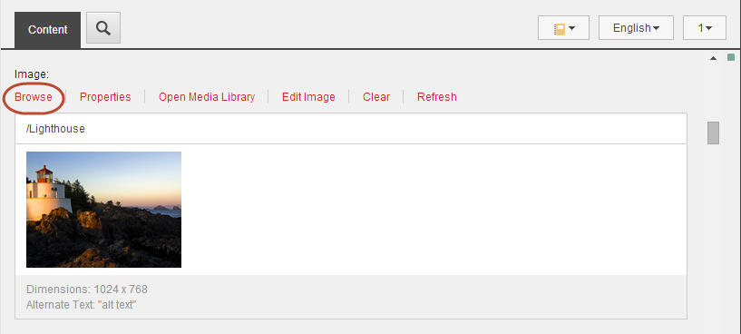
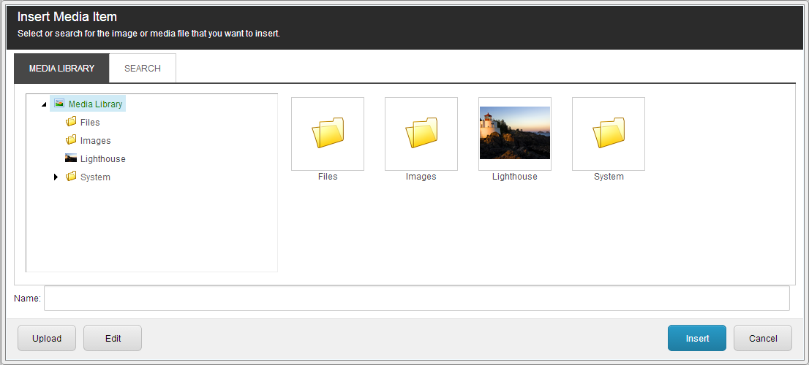

画像の挿入¶
コンテンツエディタやエクスペリエンスエディタでは、画像フィールドやリッチテキストフィールドに、さまざまなタイプのメディア（一般的には画像）を挿入することができます。これらのメディアアイテムには、画像、アニメーション、フィルムクリップ、サウンドファイルなどがあります。
画像フィールドに画像を挿入する¶
画像フィールドに画像を挿入または変更するには
コンテンツ エディタまたはエクスペリエンス エディタで、編集するアイテムまたはページに移動します。

[コンテンツ エディタ] で [コンテンツ] タブをクリックして、画像を挿入する画像フィールドを探し、[参照] をクリックします。
{kind=link}
エクスペリエンス エディタで、画像を挿入する画像フィールドをクリックし、表示されるフローティング ツールバーで [画像の選択] をクリックします。 [画像の選択] アイコンが表示されます。
[メディアの選択］ダイアログボックスには、選択したフィールドで利用可能なメディア ライブラリのすべてのアイテムが表示されます。
{kind=link}
メディアの選択ダイアログボックスのアイテムは、特定の順序でリストアップされていないので、検索機能やメニューの定義済みリストを使用して画像を探します。
「メディア」メニューでは、リンクを使用して、「すべての画像ファイル」、「すべての動画ファイル」、「私の画像」、「最近アップロードされた画像」、「最近アップロードされた動画」の完全なリストをすばやく表示できます。
画像の特定のメタデータに従って表示されるメディアアイテムをフィルタするには、[フィルタ] ドロップダウン矢印をクリックして、必要なフィルタを選択します。括弧内の数字は、フィルタで使用できるアイテムの数を示します。
{kind=link}
特定のアイテムを検索するには、検索フィールドに検索語を入力します。
コンテンツツリーをナビゲートして使用する画像を見つけるには、右上隅のツリービューアイコン をクリックします。リストビューに戻るには、リストビュー をクリックします。
使用する画像を選択し、「メディアの選択」をクリックすると、新しい画像が画像フィールドに挿入されます。
注釈
使用する画像がない場合は、[メディアをアップロード] をクリックして、 新しい画像をメディアライブラリにアップロード します。
エクスペリエンスエディタのテキストフィールドに画像を挿入する¶
エクスペリエンス エディタでページ上のテキスト フィールドに直接画像を挿入するには
エクスペリエンス エディタで、メディア アイテムを挿入するリッチ テキスト フィールドに移動します。
フィールドをクリックし、表示されるフローティング ツールバーで [画像の挿入] をクリックします。
注釈
フローティング ツールバーに [画像の挿入] ボタンが表示されない場合は、[その他] ドロップダウン矢印をクリックします。
[メディアの選択］ダイアログボックスには、選択したフィールドで利用可能なメディア ライブラリのすべてのアイテムが表示されます。
メディアの選択ダイアログボックスのアイテムは、特定の順序でリストアップされていないので、検索機能やメニューの定義済みリストを使用して画像を探します。
[メディア]メニューでは、リンクを使用して、「すべての画像ファイル」、「すべての動画ファイル」、「私の画像」、「最近アップロードされた画像」、「最近アップロードされた動画」の完全なリストをすばやく表示できます。
画像の特定のメタデータに従って表示されるメディアアイテムをフィルタするには、[フィルタ] ドロップダウン矢印をクリックして、必要なフィルタを選択します。括弧内の数字は、フィルタで使用できるアイテムの数を示します。
特定のアイテムを検索するには、検索フィールドに検索語を入力します。
コンテンツツリーをナビゲートして使用する画像を見つけるには、右上隅のツリービューアイコン をクリックします。リストビューに戻るには、リストビュー をクリックします。
使用する画像を選択し、「メディアの選択」をクリックすると、新しい画像が画像フィールドに挿入されます。
使用する画像がない場合は、[メディアをアップロード] をクリックして、新しい画像をメディアライブラリにアップロード します。
リッチテキストエディタに画像を挿入する¶
リッチ テキスト エディタで画像やその他のタイプのメディア アイテムを挿入するには、次の手順に従います。
コンテンツエディタまたはエクスペリエンスエディタで、メディアアイテムを挿入するテキストフィールドに移動します。
リッチテキストエディタを開き、[Insert Sitecore Media]をクリック します。
[メディアアイテムの挿入］ダイアログボックスが開きます。
イメージがすでにメディアライブラリにある場合は、挿入するイメージを探して選択し、[挿入]をクリックします。イメージを見つけるには、［メディア ライブラリ］タブのコンテンツ ツリーをナビゲートするか、［検索］タブでアイテムを検索します。
{kind=link}
画像がメディア ライブラリにない場合は、[アップロード] をクリックします。
[ファイルのアップロード］ダイアログボックスで［参照］をクリックし、使用する画像ファイルを選択します。
[開く］ダイアログで［開く］をクリックして、イメージファイルをメディアライブラリにアップロードします。
画像ファイルがコンテンツ エディタで開きます。新しい画像を保存して［メディアアイテムの挿入］ダイアログボックスに戻るには、［保存/閉じる］をクリックします。
テキスト フィールドに画像を挿入するには、[挿入] をクリックします。
注釈
[キャンセル］をクリックすると、［メディア アイテムの挿入］ダイアログ ボックスは閉じられますが、 新しいアイテムはメディア ライブラリに残ります。